- Go to Addin Manager
- Open Repository drop down and click "Manage Repositories..."
- Add http://indomitable.github.io/monodevelop-tfs-addin/4.2/ in Url text entry
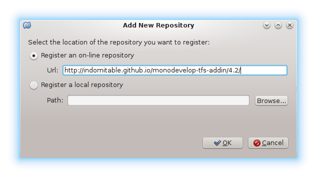 - On Version Control section select "TFS Support" and click Install
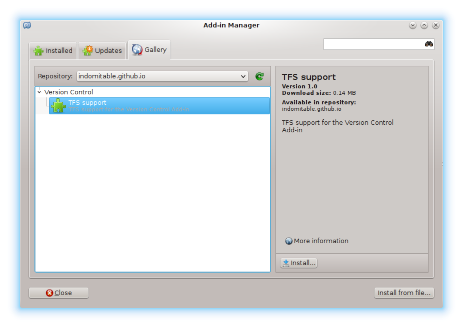 - It's recomended to restart MonoDevelop after installation has finished.
In Menu -> Version Control section you will find the TFS menu at the bottom. To start click either on Team Explorer or Connect to Server.
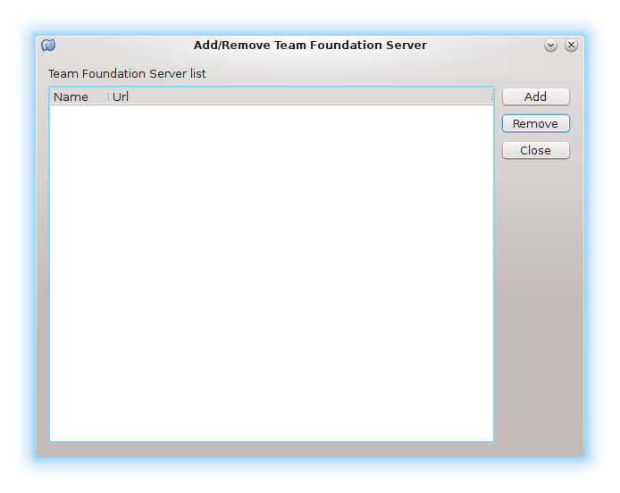
Click Add and enter server details:
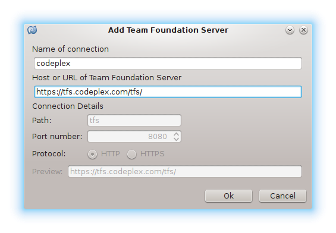
Enter you credentials:
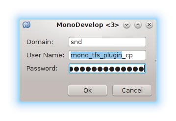
Choose projects you want to be connected to:
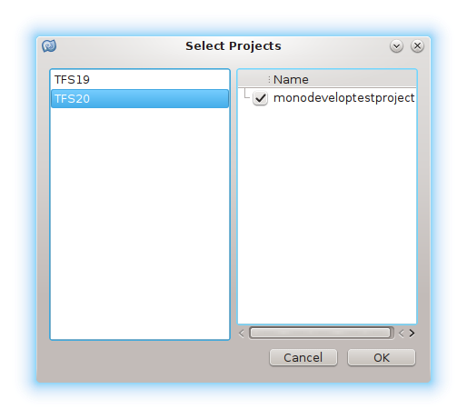
You could edit your projects when double clicks on server entry.
Close "Connect to server" dialgo and open "Team Explorer" from Menu -> Version Control -> TFS -> Team Explorer.
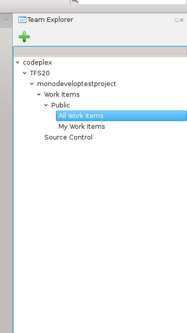
Click on Source Control to open source explorer view.
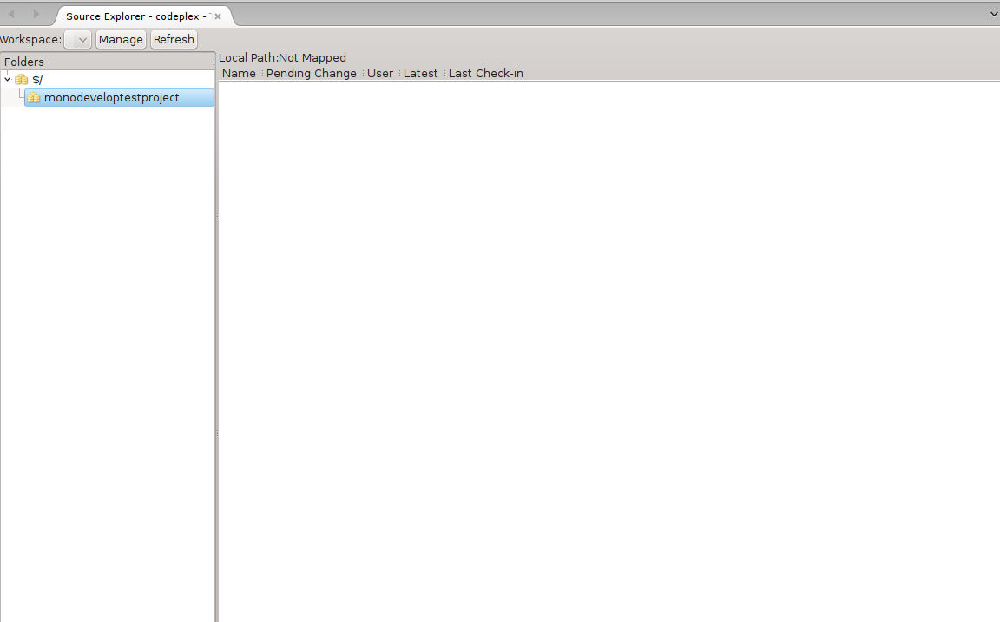
This is a newly created project in Codeplex and we have to configure a workspace to work and to add some source files.
Click on "Manage" button to create a new workspace.
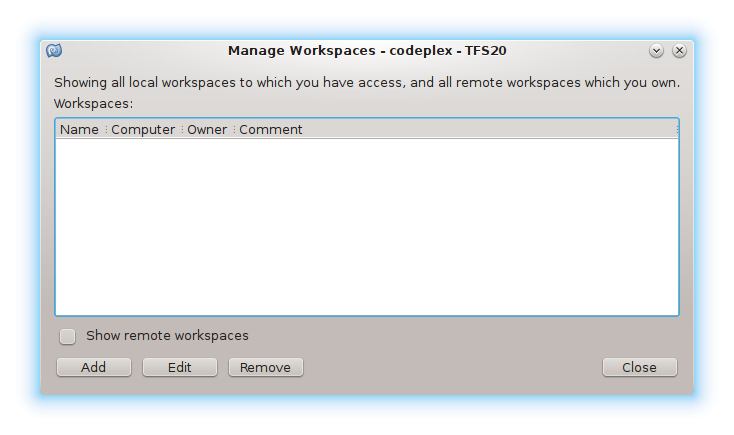
Click "Add" and enter workspace details. Add a working folder.
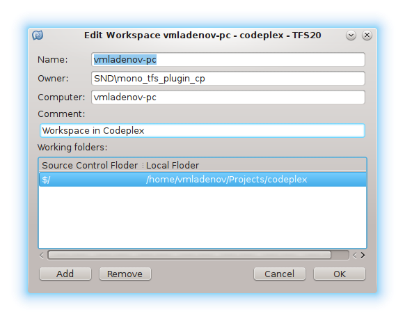
Now when there is a mapping click "Get Latest version" on project in list view to create project folder.

Let's create a new project and commit it to Code Plex.
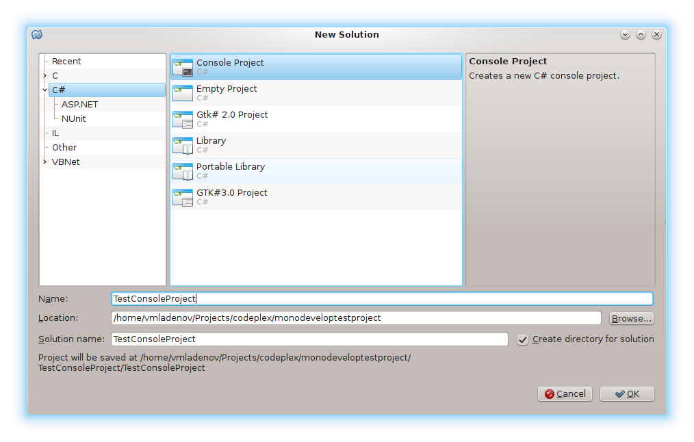
The files of the new project are not controled by version control yet and we need to add them.
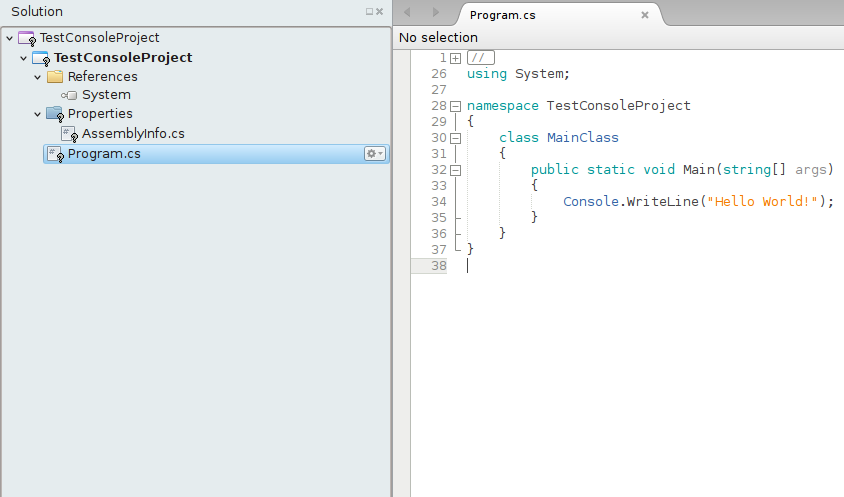
Select solution and click "Add" from version control menu.
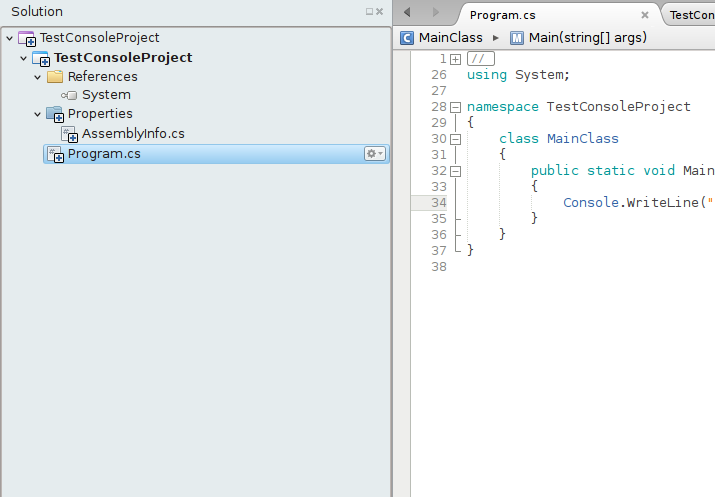
Then click on "Review solution and commit" from version control menu. All files will be selected, remove bin and obj files.
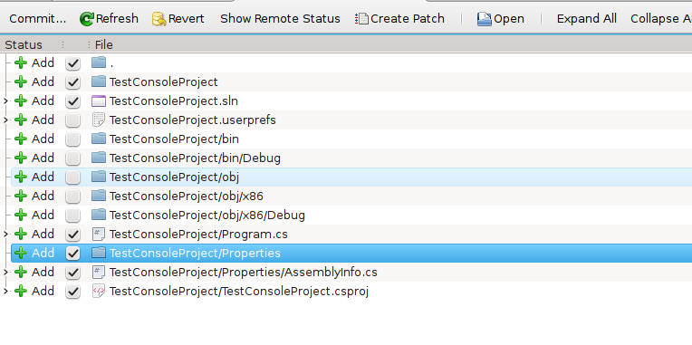
Click commit to send files to server.
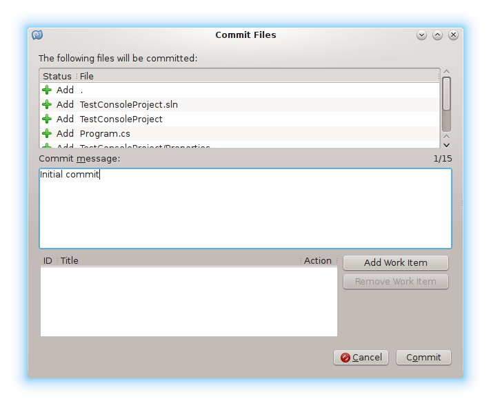
Click revert on files which we don't want to be versioned (bin and obj)
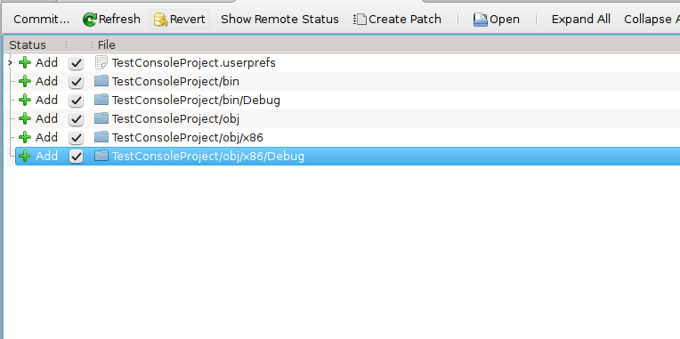
-
1.2
- Upload files on chunks - enable to upload big files.
How to track bugs
The best way to track bugs is using debugging.
-
Go to monodevelop-tfs-addin and click on Fork button.
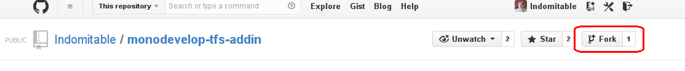 -
Open the terminal and type
git clone url_to_you_repository. -
cd monodevelop-tfs-addin -
Download monodevelop and its submodules
git submodule update --init --recursive- this will take some time. -
Create new branch where to debug and fix the problem:
git checkout -b BranchName - Open MonoDevelop.VersionControl.TFS.sln file using XamarinStudio or MonoDevelop.
-
For Mac and Windows select Project -> Solution Options -> Build -> Configurations -> Configuration Mappings
then for MonoDevelop.VersionControl.TFS project select configuration Debug No-DBus.
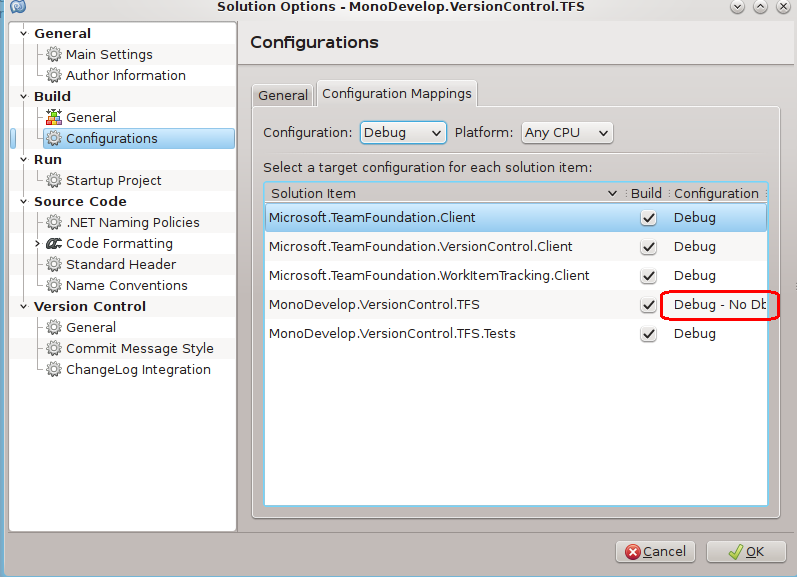
I use DBus under Linux/KDE for talking with KWallet, but for Mac and Windows I use stardard MonoDevelop function for storing password securely. - Build Solutuion.
-
Before starting debug you have to build MonoDevelop: go to MonoDevelop folder
cd External/monodevelop/and type./configure && makethis will create MonoDevelop binaries. -
Finally from the menu select
Run -> Debug Application...choose External/monodevelop/main/build/bin/ folder and select MonoDevelop.exe
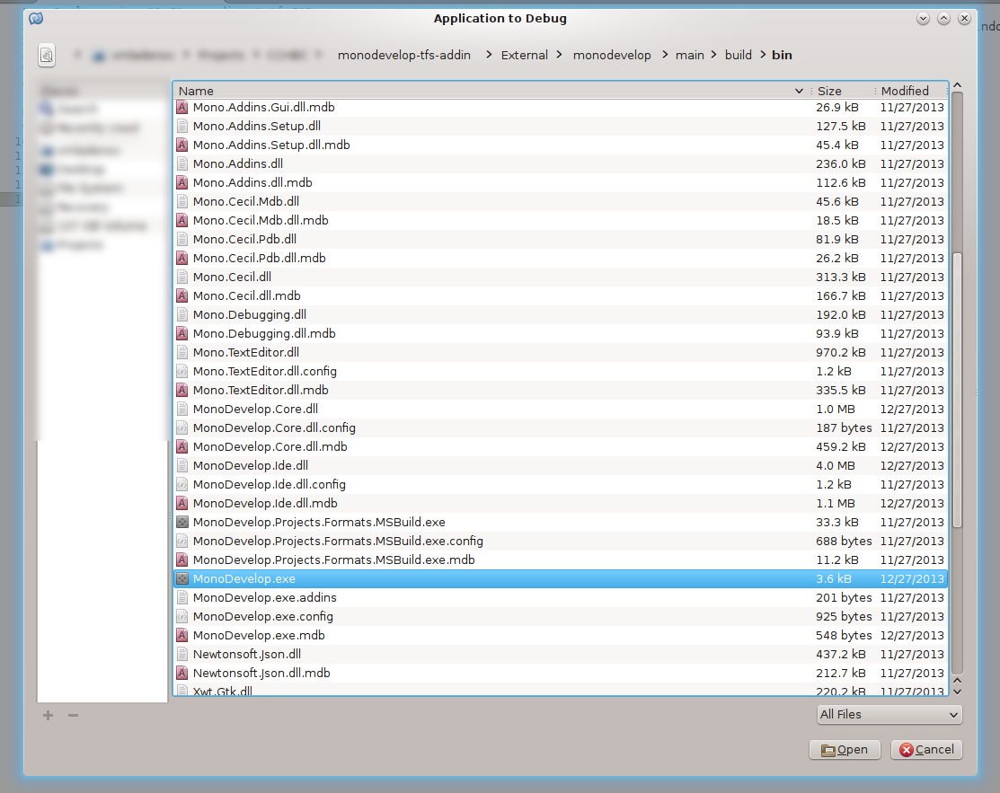 -
After fixing the bug, commit chages using:
git commit -a
git push - Go to GitHub and create a pull request.
Happy debugging... :)